在“视图”下拉菜单或者浮动菜单中选择“控制面板切换”后，数控系统操作键盘会出现在视窗的右上角，其左侧为数控系统显示屏，如下图所示。用操作键盘结合显示屏可以进行数控系统操作。
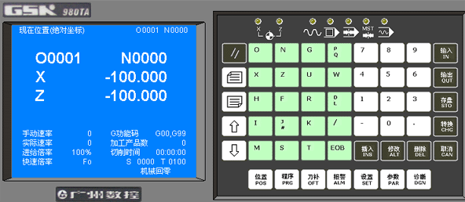
字母/数字键
数字/字母键用于输入数据到输入区域（如下图所示）:
编辑键
|
位参数，位诊断含义显示方式的切换 |
|
消除输入到键输入缓冲寄存器中的字符或符号。键缓寄存器的内容由CRT显示。例：键输入缓冲寄存器的显示为：N001时，按（CAN）键，则N001被取消。 |
|
用于程序的删除的编辑操纵 |
|
用于程序的修改的编辑操纵 |
|
用于程序的插入的编辑操纵 |
页面切换键
|
按下其键，ＣＲＴ显示现在位置，共有四页［相对］，［绝对］，［总和］，[位置／程序］，通过翻页键转换。 |
|
程序的显示、编辑等，共有三页，［MDI/模］，［程序］，［目录／存储量］。 |
|
显示，设定补偿量和宏变量，共有两项，［偏置］，［宏变量］。 |
|
显示报警信息。 |
|
显示，设置各种设置参数，参数开关及程序开关 |
|
显示，设定参数。 |
|
显示各种诊断数据。 |
翻页按钮（PAGE）
|
使LCD画面的页逆方向更换． |
|
使LCD画面的页顺方向更换． |
光标移动（CURSOR）
|
|
使光标向上移动一个区分单位． |
|
使光标向下移动一个区分单位． |
复位键：
输入键
|
|
输入键。用于输入参数，补偿量等数据。从RS232接口输入文件的启动。MDI方式下程序段指令的输入。 |
输出键
手动返回参考点
(1)按参考点方式键 ，选择回参考点操作方式，这时液晶屏幕右下角显示［机械回零］。
，选择回参考点操作方式，这时液晶屏幕右下角显示［机械回零］。
(2)按下手动轴向运动开关
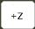
，可回参考点。
(3)返回参考点后，返回参考点指示灯亮。
注1：返回参考点结束时，返回参考点结束指示灯亮。
注2：返回参考点结束指示灯亮时，在下列情况下灭灯。
(1)从参考点移出时
(2)按下急停开关
注３：参考点方向，主参照机床厂家的说明书。
手动返回程序起点
(1) 按下返回程序起点键，选择返回程序起点方式，这时液晶屏幕右下角显示［程序回零］。
(2) 选择移动轴
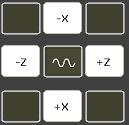
机床沿着程序起点方向移动。回到程序起点时，坐标轴停止移动，有位置显示的地址［X］，［Ｚ］，［Ｕ］，［Ｗ］闪烁。返回程序起点指示灯亮。程序回零后，自动消除刀偏。
手动连续进给
(1)按下手动方式键 ，选择手动操作方式，这时液晶屏幕右下角显示[手动方式]。
，选择手动操作方式，这时液晶屏幕右下角显示[手动方式]。
(2)选择移动轴
机床沿着选择轴方向移动。
注1：手动期间只能一个轴运动，如果同时选择两轴的开关，也只能是先选择的那个轴运动。如果选择2轴机能，可手动2轴开关同时移动。
(3)调节JOG进给速度
(4)快速进给
按下快速进给键时，同带自锁的按钮，进行‘开→关→开…’切换，当为‘开’时，位于面板
上部指示灯亮，关时指示灯灭。选择为开时，手动以快速速度进给。按此开关为ON时，刀具在已选择的轴方向上快速进给。
注1：快速进给时的速度，时间常数，加减速方式与用程序指令的快速进给（GOO定位）时相同。
注2：在接通电源或解除急停后，如没有返回参考点，当快速进给开关为ON（开）时，手动进给速度为JOG进给速度或快速进给，由参数（№012
LSO）选择。
注3：在编辑/手轮方式下，按键无效。指示灯灭。其它方式下可选择快速进给，转换方式时取消快速进给。
手轮进给
转动手摇脉冲发生器，可以使机床微量进给。
(1)按下手轮方式键，选择手轮操作方式，这时液晶屏幕右下角显示[手轮方式]。
(2)选择手轮运动轴：在手轮方式下，按下相应的键


注：在手轮方式下，按键有效。所选手轮轴的地址[U]或[W]闪烁。
(3)转动手轮
(4)选择移动量：按下增量选择移动增量，相应在屏幕左下角显示移动增量。
(5)移动量选择开关
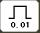
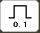
| |
每一刻度的移动量 |
|
输入单位制 |
0.001 |
0.01 |
0.1 |
|
公制输入(毫米) |
0.001 |
0.01 |
0.1 |
注1：上表中数值根据机械不同而不同
注2：手摇脉冲发生器的速度要低于5转/秒。如果超过此速度，即使手摇脉冲发生器回转结束了，但不能立即停止，会出现刻度和移动量不符。
注：在手轮方式下，按键有效。
手动辅助机能操作
(1)
手动换刀
手动/手轮方式下按下此键，刀架旋转换下一把刀。（参照机床厂家的说明书）
(2)冷却液开关
手动/手轮方式下，按下此键，同带自锁的按钮，进行‘开→关→开…’切换。
(3)润滑开关
 手动/手轮方式下,按下此键，同带自锁的按钮，进行‘开→关→开…’切换。
手动/手轮方式下,按下此键，同带自锁的按钮，进行‘开→关→开…’切换。
(4)主轴正转
手动/手轮方式下，按下此键，主轴正向转动起动。
(5)主轴反转
手动/手轮方式下，按下此键，主轴反向转动起动。
(6)主轴停止
 手动/手轮方式下，按下此键，主轴停止转动。
手动/手轮方式下，按下此键，主轴停止转动。
(7)主轴倍率增加，减少（选择主轴模拟机能时）
增加：按一次增加键，主轴倍率从当前倍率以下面的顺序增加一挡
50%→60%→70%→80%→90%→100%→110%→120%．．．
减少：按一次减少键，主轴倍率从当前倍率以下面的顺序递减一挡
120%→110%→100%→90%→80%→70%→60%→50%．．．
注：相应倍率变化在屏幕左下角显示。
(8)面板指示灯
回零完成灯：返回参考点后，已返回参考点轴的指示灯亮，移出零点后灯灭。
快速灯
单段灯
机床锁
辅助锁
空运行
当没有冷却或润滑输出时，按下冷却或润滑键，输出相应的点。当有冷却或润滑输出时，按下冷却或润滑键，关闭相应的点。主轴正转/反转时，按下反转/正转时键，主轴也停止。但显示会出现报警06：M03，M04码指定错。在换刀过程中，换刀键无效，按复位（RESET）或急停可关闭刀架正/反转输出，并停止换刀过程。
在手动方式起动后，改变方式时，输出保持不变。但可通过自动方式执行相应的M代码关闭对应的输出。
同样，在自动方式执行相的M代码输出后，也可在手动方式下按相应的键关闭相应的输出。
在主轴正转/反转时，未执行M05而直接执行M4/M03时，M04/M03无效，主轴继续主轴正转/反转，但显示会出现报警06：M03，M04码指定错。
复位时，对M08，M32，M03，M04输出点是否有影响取决于参数（P009
RSJG）。
急停时，关闭主轴，冷却，润滑，换刀输出。
运转方式
(1)存储器运转
(A)
首先把程序存入存储器中
(B)
选择要运行的程序。
(C)
把方式选择于自动方式的位置。
(D)
按循环启动按钮。
自动循环起动键
自动循环停止键
按循环启动按钮后，开始执行程序。
(2)MDI运转
从LCD/MDI面板上输入一个程序段的指令，并可以执行该程序段。
例：X10.5
Z200.5；
(A)把方式选择于MDI 的位置（录入方式）。
的位置（录入方式）。
(B)按[程序]键
(C)按[翻页]按钮后，选择在左上方显示有‘程序段值’的画面。
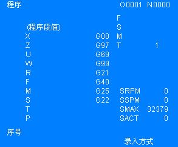
(D)
键入X10.5。
(E)
按IN键。X10.5输入被显示出来。按IN键以前，发现输入错误，可按CAN键，然后再次输入X和正确的数值。如果按IN键后发现错误，再次输入正确的数值。
(F)
输入Z200.5。
(G)按IN，Z200.5被输入并显示出来。
(H)按循环起动键
按循环起动键前，取消部分操作内容。为了要取消Z200.5，其方法如下：
(A)依次按Z、CAN键。
(B)按循环启动按钮。
自动运转的启动
存储器运转
1）选择自动方式
2）选择程序
3）按操作面板上的循环启动按钮
自动运转的停止
使自动运转停止的方法有两种，一是用程序事先在要停止的地方输入停止命令，二是按操作面板上按钮使它停止。
（1）程序停（M00）
含有M00的程序段执行后，停止自动运转，与单程序段停止相同，模态信息全部被保存起来。用CNC启动，能再次开始自动运转。
（2）程序结束（M30）
(A)表示主程序结束.
(B)停止自动运转,变成复位状态。
(C)返回到程序的起点。
（3）进给保持
在自动运转中，按操作板上的进给保持键可以使自动运转暂时停止。

进给保持键
循环停止键
按进给保持按钮后，机床呈下列状态。
1)
机床在移动时，进给减速停止。
2)
在执行暂停中，休止暂停。
3)
执行M、S、T的动作后，停止。
按自动循环起动键后，程序继续执行。
（4）复位
用LCD/MDI上的复位键，使自动运转结束，变成复位状态。在运动中如果进行复位，则机械减速生停止。
复位键
|
全轴机床锁住
机床锁住开关为ON时，机床不移动，但位置坐标的显示和机床运动时一样，并且M、S、T都能执行。此功能用于程序校验。
按一次此键，同带自锁的按钮，进行‘开→关→开…’切换，当为‘开’时，指示灯亮，关时指示灯灭。
机床锁住灯
辅助功能锁住
如果机床操作面板上的辅助功能锁住开关 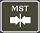 置于ON位置，M、S、T代码指令不执行，与机床锁住功能一起用于程序校验
注：M00，M30，M98，M99按常规执行。
进给速度倍率
用进给速度倍率开关，可以对由程序指定的进给速度倍率。
进给速度倍率按键
具有0～150%的倍率。
注：进给速度倍率开关与手动连续进给速度开关通用。
快速进给倍率
快速进给倍率选择键
快速倍率有F0，25%，50%，100%四挡。
可对下面的快速进给速度进行100%、50%、25%的倍率或者为F0的值上。
(1)
G00快速进给
(2)
固定循环中的快速进给
(3)
G28时的快速进给
(4)
手动快速进给
(5)
手动返回参考点的快速进给
当快速进给速度为6米/分时，如果倍率为50%，则速度为3米/分。
空运转
当空运转开关 为ON时，不管程序中如何指定进给速度，而以下面圾中的速度运动。 为ON时，不管程序中如何指定进给速度，而以下面圾中的速度运动。
| |
程
序
指
令 |
|
快速进给 |
切削进给 |
|
手动快速进给按钮ON(开) |
快速进给 |
JOG进给最高速度 |
|
手动快速进给按钮OFF（关） |
JOG进给速度或快速进给 |
JOG进给速度 |
注：用参数设定（RDRN，№004）也可以快速进给。
进给保持后或者停止后的再启动
在进给保持开关为ON状态时，（自动方式或者录入方式），按循环启动按钮，自动循环开始继续运转。
单程序段
当单程序段开关 置于ON时，单程序段灯亮，执行程序的一个程序段后，停止。如果再按循环启动按钮，则执行完下个程序段后，停止。 置于ON时，单程序段灯亮，执行程序的一个程序段后，停止。如果再按循环启动按钮，则执行完下个程序段后，停止。
注1：在G28中，即使是中间点，也进行单程序段停止。
注2：在单程序段ON时，执行固定循环G90，G92，G94，G70~G75时，如下述情况：
（…………………→快速进给，________________→切削进给）
注3：M98
P＿；，M99；及G65的程序段不能单程序段停止。但M98、M99程序段中，除N，O，P以外还有其它地址时，能单程序段停止。
急停（EMERGENCY
STOP）
按下急停按钮 ，使机床移动立即停止，并且所有的输出如主轴的转动，冷却液等也全部关闭。旋转按钮后解除，但所有的输出都需重新起动。 ，使机床移动立即停止，并且所有的输出如主轴的转动，冷却液等也全部关闭。旋转按钮后解除，但所有的输出都需重新起动。
一按按钮，机床就能锁住，解除的方法是旋转后解除。
注1：紧急停时，电机的电源被切断。
注2：在解除急停以前，要消除机床异常的因素。
超程
如果刀具进入了由参数规定的禁止区域（存储行程极限），则显示超程报警，刀具减速后停止。此时用手动，把刀具向安全方向移动，按复位按钮，解除报警。具体的范围，请参照机床厂家发行的说明书。
程序存储、编辑操作前的准备
在介绍程序的存储、编辑操作之前，有必要介绍一下操作前的准备。
(1)把程序保护开关置于ON上。
(2)操作方式设定为编辑方式 。 。
(3)按[程序]键后，显示程序。
后方可编辑程序。
选择一个数控程序
按键，显示程序画面；
按O键；
键入要检索的程序号如：；
按
删除一个数控程序
选择编辑方式；
按按O键；
用键输入程序号如：；
按DEL键，则对应键入程序号的存储器中程序被删除。
删除全部程序
选择编辑方式；
按键，显示程序画面；
按键O；
age: AR-SA">键
顺序号检索
顺序号检索通常是检索程序内的某一顺序号，一般用于从这个顺序号开始执行或者编辑。
由于检索而被跳过的程序段对CNC的状态无影响。也就是说，被跳过的程序段中的坐标值、M、S、T代码、G代码等对CNC的坐标值、模态值不产生影响。因此，进行顺序号检索指令，开始或者再次开始执行的程序段，要设定必要的M、S、T代码及坐标系等。进行顺序号检索的程序段一般是在工序的相接处。
如果必须检索工序中某一程序段并以其开始执行时，需要查清此时的机床状态、CNC状态需要与其对应的M、S、T代码和坐标系的设定等，可用录入方式输入进去，执行进行设定。
检索存储器中存入程序号的步骤：
（a）把方式选择置于自动或编辑上；
（b）按键，显示程序画面；
（c）选择要检索顺序号的所在程序；
（d）按地址键N；
（e）用键输入要检索的顺序号；
（f）按光标键；
（g）检索结束时，在LCD画面的右上部，显示出已检索的顺序号。
注1：在顺序号检索中，不执行M98
+ + + +(调用的子程序),因此，在自动方式检索时，如果要检索现在选出程序中所调用的子程序内的某个顺序号，就会出现报警P/S(№060)。
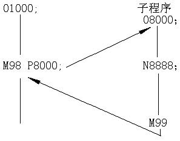
上例中如果要检索N8888 则会出现报警
字的插入、修改、删除
存入存储器中程序的内容，可以改变。
(a)
把方式选择为编辑方式;
(b)
按[程序]键，显示程序画面；
(c)
选择要编辑的程序；
(d)
检索要编辑的字。有以下两种方法（见注2）
1）
用扫描（SACN）的方法
2）
用检索字的方法
(e)进行字的修改、插入、删除等编辑操作
注1：字的概念和编辑单位：所谓字是由地址和跟在它后面的数据组成。对于用户宏程序，字的要领完全没有了，通称为“编辑单位”。在一次扫描中，光标显示在“编辑单位”的开头。插入的内容在“编辑单位”之后。
编辑单位的定义：
1）
从当前地址到下个地址之前的内容。如：G65
H01 P#103 Q#105；中有4个编辑单位。
2）
所谓地址是指字母；（EOB）为单独一个字。
根据这个定义，字也是一个编辑单位。在下面关于编辑的说明中，所谓字，正确地应该说“编辑单位”
注2：光标总是在某一编辑单位的下端，而编辑的操作也是在光标所指的编辑单位上进行的，在自动方式下程序的执行也是从光标所指的编辑室单位开始执行程序的。将光标移动至要编辑的位置或要执行的位置称之为检索。
(1)
字的检索
(a)用扫描的方法
一个字一个字地扫描
1）按光标时
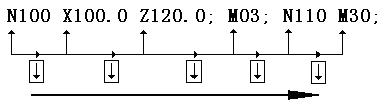
此时，在画面上，光标一个字一个字地顺方向移动。也就是说，在被选择和地址下面，显示出光标。
2）
按光标键时
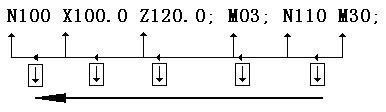
此时,在画面上，光标一个字一个字地反方向移动。也就是说，在被选择字的地址下面，显示出光标。
3）
如果持续按光标或者光标
，则会连续自动快速移动光标。
4）
按下翻页键，画面翻页，光标移至下页开头的字。
5）
按上翻页键，画面翻到前一页，光标移至开头的字。
6）
持续按下翻页或上翻页，则自动快速连续翻页。
(b)检索字的方法
从光标现在位置开始，顺方向或反方向检索指定的字。
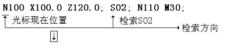
1）
用键输入地址S
2）
用键输入‘0’，‘2’
注1：如果只用键输入S1，就不能检索S02
注2：检索S01时，如果只是S1就不能检索，此时必须输入S01。
3）
按光标键，开始检索。
如果检索完成了,光标显示在S02的下面。如果不是按光标↓键，而是按光标↑键，则向反方向检索。
(c)
用地址检索的方法
从现在位置开始,顺方向检索指定的地址.
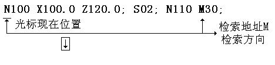
1)
按地址键M；
2)
按光标键；
检索完成后，光标显示在M的下面。如果不是按光标↓键，而是按光标↑键，则反方向检索。
(d)返回到程序开头的方法
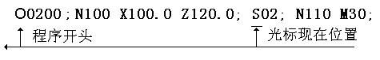
1）
方法1
按复位键（编辑方式，选择了程序画面），当返回到开头后，在LCD画面上，从头开始显示程序的内容。
2）
方法2
检索程序号。
3）
方法3
（1）置于自动方式或编辑方式；
（2）按键，显示程序画面；
（3）按地址O；
（4）按光标
键；
(2)字的插入
(a)
检索或扫描到要插入的前一个字；
(b)
用键输入要插入的地址。本例中要插入T；
(c)
用键输入15；
(d)
按键；
(3)字的变更
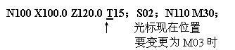
(a)检索或扫描到要变更的字
(b)输入要变更的地址,本例中输入M
(c)用键输入数据
(d)按，则新键入的字代替了当前光标所指的字。
如输入M03，按ALT键时
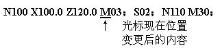
(4)字的删除
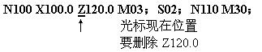
(a)检索或扫描到要删除的字
(b)按键，则当前光标所指的字被删除。
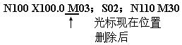
(5)多个程序段的删除
从现在显示的字开始，删除到指定顺序号的程序段。
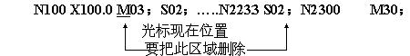
(a)按地址键N
(b)用键输入顺序号2233
(c)按键，至N2233的程序段被删除。光标移到下个字的地址下面。
补偿量
(1)刀具补偿量的设定和显示（键）
刀具补偿量的设定方法可分为绝对值输入和增量值输入两种。
(a)对值输入时
1)按键
2)因为显示分为多页，按翻页按钮，可以选择需要的页。
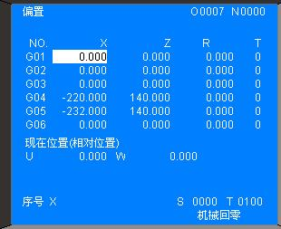
3)把光标移到要输入的补偿号的位置。
扫描法：按上、下光标键盘顺次移动光标
检索法：用下述按键顺序直接移动光标至键入的位置
P补偿号IN键
4)地址X或Z后，用数据键，输入补偿量（可以输入小数点）
5)按键后，把补偿量输入，并在LCD上显示出来。
(b)增量值输入
1)把光标移到要变更的补偿号的位置。
（与（1）-3）的操作相同）
2)如要改变X轴的值，键入U，对于Z轴，键入W。
3)用数据键键入增量值。
4)按键，把现在的补偿量与键入的增量值相加，其结果作为新的补偿量显示出来。
例:已设定的补偿量5.678
键盘输入的增量1.5
新设定的补偿量7.178(=5.678+1.5)
注：在自动运转中，变更补偿量时，新的补偿量不能立即生效，必须在指定其补偿号的T代码被指行后，才开始效
设置参数的设定
(1)
设置参数设定和显示（键）
(a)选择录入方式（MDI）
(b)按键，显示设置参数。
(c)按翻页键，显示出设置参数开关及程序开关页。
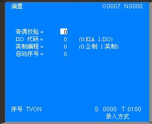
(d)按光标键，使它移到要变更的项目上。
(e)按以下说明，输入1或0。
1)奇偶校验（TVON）
未用。
2)ISO代码（ISO）
当把存储器中的数据输入输出时，选用的代码
1：ISO码
0：EIA码
注：用980T通用编程器时，设定为ISO码。
3)英制编程
设定程序的输入单位是英寸还是毫米
1：英寸
0：毫米
4)自动序号
0：在编辑方式下用键盘输入程序时，顺序号不能自动插入。
1：在编辑方式下用键盘输入程序时，顺序号自动插入。各程序段间顺序号的增量值，可事先用参数P042设置。
(f)按IN键，各设置参数被设定并显示出来。
(2)
参数开关及程序开关状态设置
(a)按键
(b)按翻页键，显示参数开关及程序开关状态画面
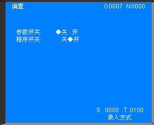
按W，D/L键可使参数及程序开关处于关、开的状态，参数处于开状态时，CNC显P/S100号报警，此时方可输入参数，输入完毕后，使参数开关处于关的状态，复位键（RESET
）按后可清除100号报警。
|